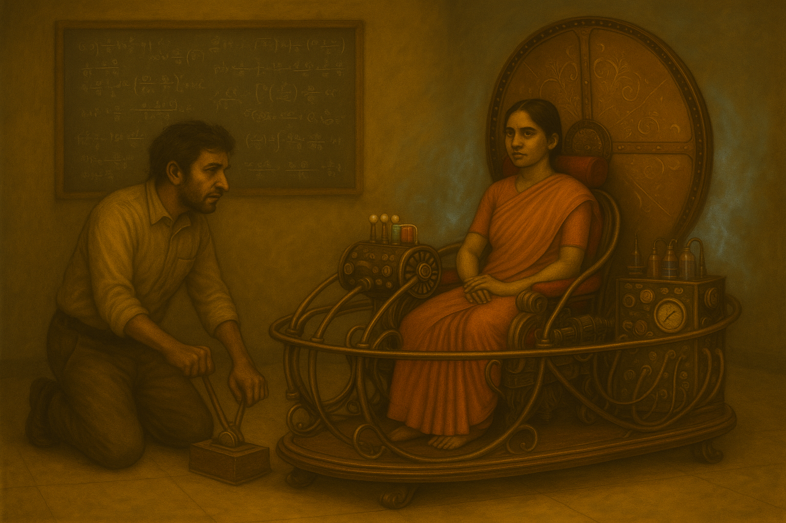
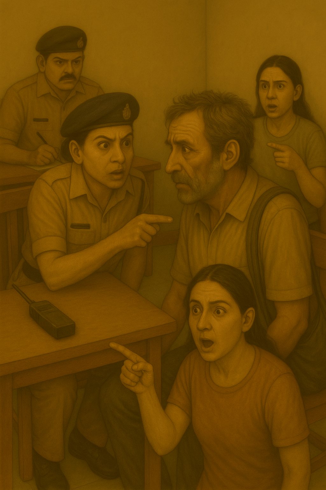

Madan's voice trembled as he began, his words carrying everyone in the station into a memory heavier than stone.
FLASHBACK – 15th March 1995 – Total Solar Eclipse
Night fell at noon. Behind St Xavier's College, the open field sank into an eerie twilight. The chorus of frogs went mute, sparrows tucked themselves into silence, and even the trees seemed to hold their breath.
In the house a self-built laboratory, at the center stood a strange contraption—a lattice of brass rings and copper coils, sparking with blue coronas that hissed and flared like captive lightning. Two figures worked feverishly around it, their faces glowing in the intermittent bursts of light.

Saraswati Sheshadri, sleeves rolled up, gripped a wrench so tightly her knuckles whitened. The dial before her trembled.
"Sixty-three point four microteslas," she called, her voice steady despite the tremor in her fingers.
Madan Sheshadri, chalk dust smeared across his kurta, squinted over her notes. "That gives us ninety-three seconds inside the window. If I hold coordinates at zero declination…"
Saraswati's lips curved into the faintest smile. "Ninety-three seconds ? thats more than anyone's ever had."
The light dimmed again, turning the world bruise-purple. The device thrummed, the metallic air tugging at her sari from all directions at once. She stepped into the coil's heart.
"If anything goes wrong—" Madan began.
"Then write our story," she cut in, placing a hand on his cheek. "And promise me you'll keep refining the equations. The future is only a hypothesis."
His throat tightened. He forced himself to nod, then slammed the knife switch down.
The world split open. A sound like silk tearing filled the room. For one heartbeat, Saraswati shimmered like a mirage on water—then she was gone, swallowed by time itself. The coils collapsed in a plume of smoke, brass snapping like brittle bone.
Above them, the black sun slid away, and daylight returned mercilessly, exposing the scorched circle of the flooring where she had stood. Madan dropped to his knees, clutching the still-warm wrench that suddenly felt heavier than his own body.
"Saraswati…" he whispered to the blazing sky. The eclipse carried her name away.
BACK TO THE PRESENT
Silence hung heavy in the police station. Even the ceiling fan seemed to pause, as though the room itself was stunned.
Aditi and Shwetha sat frozen, wide-eyed. The enormity of what they had just heard struck like a tidal wave—Saraswati had been a time traveler all along. No wonder she'd seemed so out of place, so lost in this era.
Madan's voice cracked as he concluded, "And that is how I lost my Saraswati."
Shwetha whispered, almost to herself, "She really came all the way to 2014…"
Madan nodded absently. "And still in the same sari she wore that day in 1995." His face twisted with grief and confusion. Turning to Aditi and Shwetha, he asked softly, "How long… how long was she with you?"
Before they could answer, Avni cut in sharply. "Two, three hours. That's all. And from now on—you talk only to me. Not them."
Her words hung like a blade in the air.
Madan adjusted the strap of his jhola bag, his hand rising absentmindedly to scratch his left ear.
Aditi's eyes widened. She shot bolt upright, pointing. "That's him! The birthmark—on the ear! It's him!"
Avni barked, "Stop screaming!"

But Aditi's voice shook with conviction. "He's the one. He shot Saraswati. I saw that mark on the killer's ear!"
Shwetha gasped, piecing her own memory together. "Yes! He must have disguised himself as an old man—then killed her!"
The station erupted. Officers shifted, circling closer.
Madan staggered back, panic clawing at his voice. "No! No, it's not me—I've been waiting all these years to see her again. Why would I kill her?"
Avni's jaw tightened. "Pull up the CCTV footage again. Now. We'll see if it was him."
The officers moved quickly, replaying the grainy video on the monitor. As it buffered, Shwetha pressed her hand to her temple.
"I remember he said something after firing… something like: Never put your time… I can't recall the rest."
Madan, pale as chalk, suddenly whispered the rest of the sentence:
"Never put your time in someone else's hands."
He froze mid-breath. His eyes widened in horror.
"That sentence… it's mine," he whispered, voice breaking. "I wrote it. Just years ago. I meant to tell Saraswati that… when I saw her again. No one else could have known. Impossible…"
The weight of recognition crushed him. His knees threatened to buckle.
Avni's face hardened. "Hence proved. You are the killer."
She gestured sharply. "Lock him up. File the charge sheet."
An officer stepped forward, reaching for his wrists. Madan's mind reeled, that sentence echoing like a curse. The officer's hand touched his arm—
—and something inside Madan snapped. With a desperate shove he broke free, sending the officer stumbling. In a wild burst of fear and anguish, he dashed for the door.